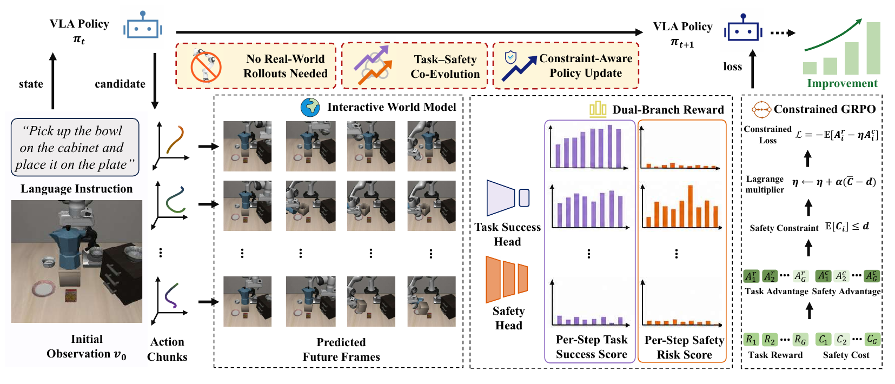

CoRL 2026 / Conference on Robot Learning
SafeDojo: Safe Reinforcement Learning for VLA
via Interactive World Model
1 Peking University2 Beijing Innovation Center of Humanoid Robotics3 Nanyang Technological University4 Hong Kong University of Science and Technology5 University of Electronic Science and Technology of China
* Equal contribution † Project leader ✉ Corresponding authors
REAL-WORLD ROBOT EXECUTION
Safe & successful rollouts
Five tasks completed successfully without obstacle collisions.
Apple selection
✓ Safe successBread to toaster
✓ Safe successBlock stacking
✓ Safe successDual-arm stacking
✓ Safe successOVERVIEW
Learning safe policies in imagination.
Exploration improves robot policies. In the physical world, a collision can carry a real cost. SafeDojo moves policy optimization into an interactive video world model, where candidate actions can be evaluated for both task progress and safety.
Imagined trajectories receive separate reward and safety-cost signals. A Lagrangian-constrained GRPO objective balances the two, improving vision-language-action policies before real-world deployment.
METHOD
World-model rollouts, safety-constrained updates.
Policy rollouts stay inside the world model. Task rewards and safety costs guide the update.

01 / IMAGINE
Interactive world model
An action-conditioned video predictor rolls out candidate action chunks into future observations and latent dynamics.
02 / EVALUATE
Separate reward and cost
A task-success classifier assesses progress. A safety head estimates per-step cost from predicted latents and proposed actions.
03 / IMPROVE
Safety-constrained GRPO
An adaptive Lagrangian multiplier balances task reward with the safety budget during policy optimization.
EXPERIMENTAL RESULTS
Measuring safe task completion.
Safe success requires completing the task without any obstacle collision. Results below are averages across SafeLIBERO suites, as reported in Tables 1 and 2.
53.25%
SafeLIBERO Level I
Safe success · +8.25 pp over the strongest baseline.
49.62%
Level II · zero-shot
Safe success · competitive with SafeVLA at 49.50%.
70%
Real-world tasks
Average safe success across five manipulation tasks.
| Method | Task success ↑ | Safe success ↑ | Execution steps ↓ |
|---|
CORL 2026 VIDEO
The full research overview.
CoRL 2026 submission overview · 2 min 56 sec · Audio and on-screen subtitles
BibTeX
@inproceedings{tang2026safedojo,
title={SafeDojo: Safe Reinforcement Learning for VLA
via Interactive World Model},
author={Tang, Kai and Jia, Peidong and Chu, Zhong
and Cao, Jiajun and Wu, Jixian and Ma, Rui
and Zhao, Fangyuan and Chen, Sixiang and Guo, Yichen
and Chi, Xiaowei and Fan, Chun-Kai and Zhang, Kevin
and Xu, Jinchang and Yang, Fubing and Mi, Weishi
and Ju, Xiaozhu and Tang, Jian and Zhang, Shanghang},
booktitle={Conference on Robot Learning},
year={2026}
}